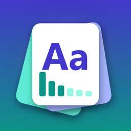
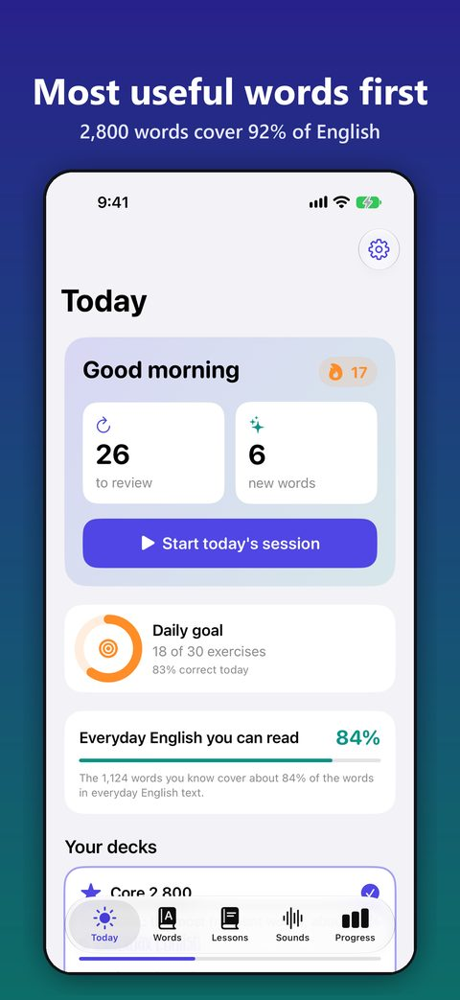
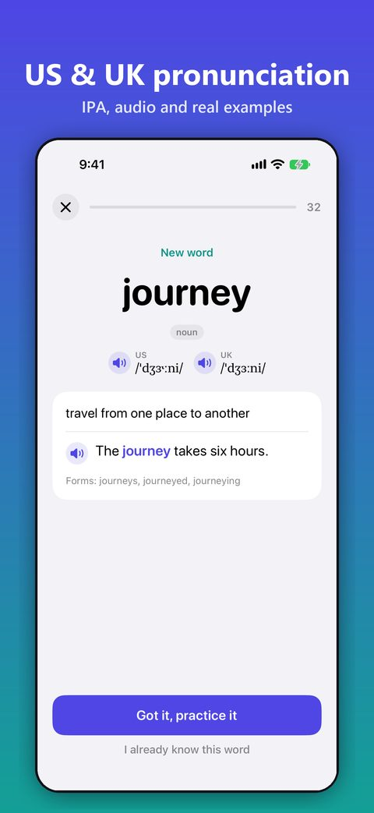
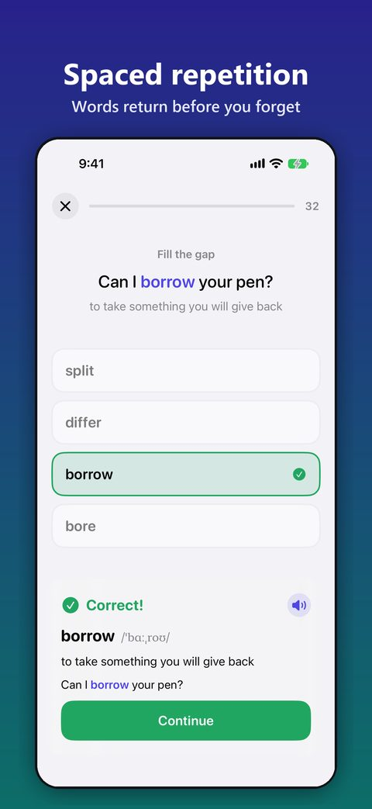
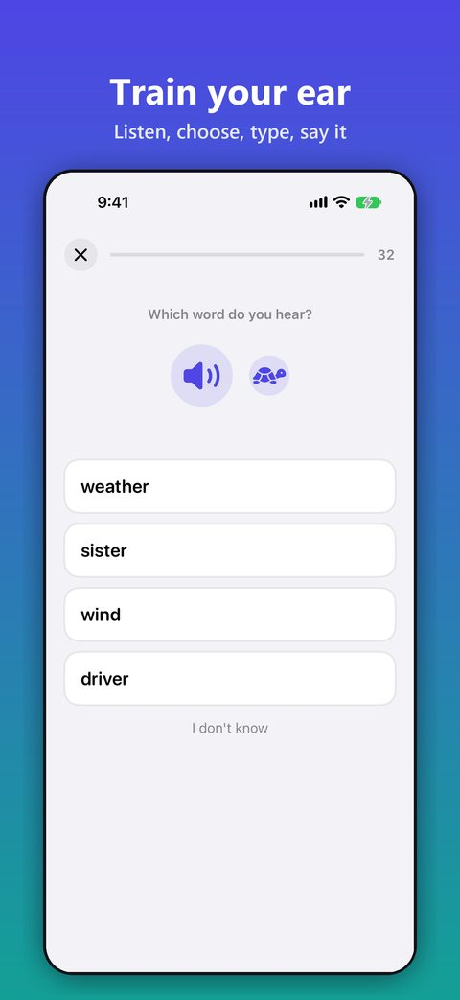
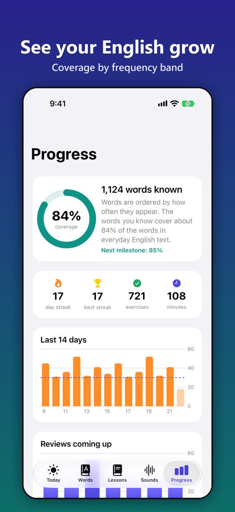
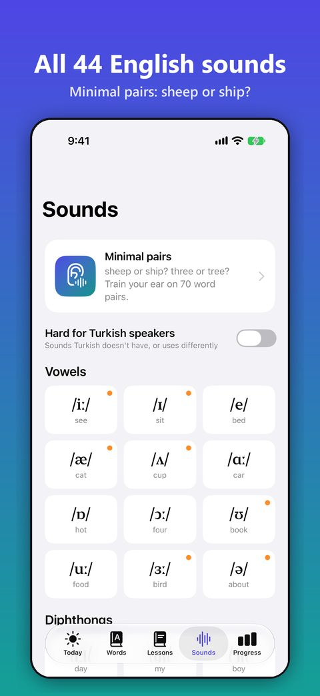
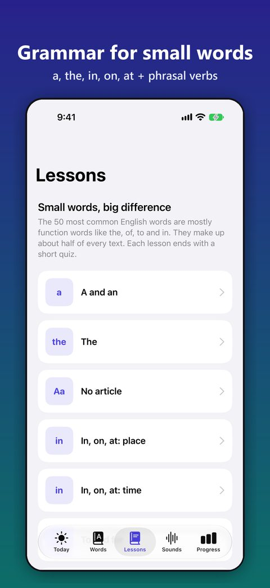
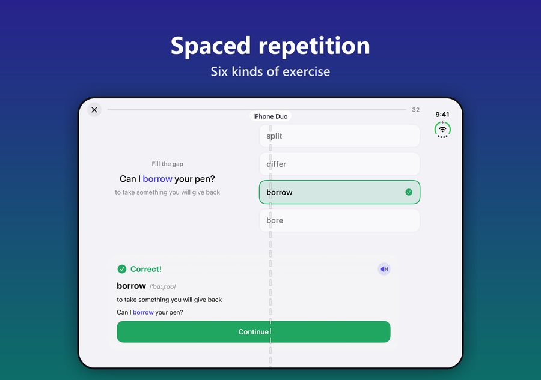
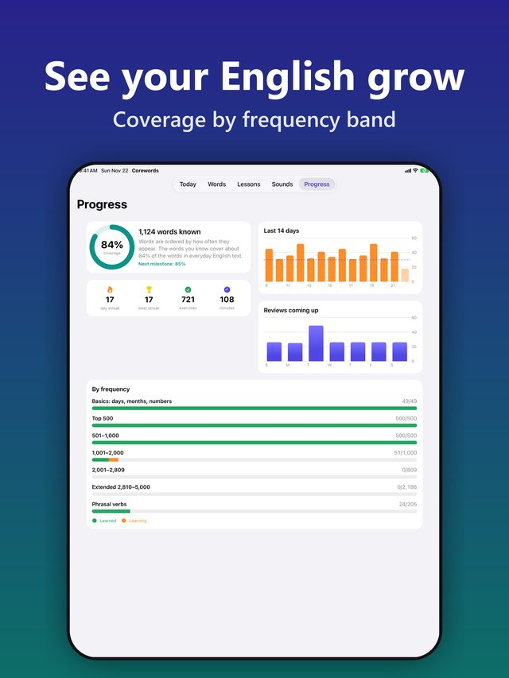

Learn the most common English words first
Corewords teaches the 2,800 words that cover about 92% of everyday English, in frequency order, with spaced repetition, American and British pronunciation in IPA, phrasal verbs and short grammar lessons. Native app for iPhone, iPad and iPhone Duo. Offline, no account, no ads.







Built to make words stick
Free and Pro
On iPad and iPhone Duo
Today, Progress, lessons and every exercise use two columns on wide screens. On the open iPhone Duo the question sits on one side of the fold and the answers on the other.


Where the words come from
The word lists and their order come from the New General Service List (NGSL) 1.2 and the NGSL-GR by Charles Browne, Brent Culligan and Joseph Phillips, licensed under CC BY-SA 4.0. American IPA is converted from the CMU Pronouncing Dictionary and British IPA comes from Britfone. Definitions, example sentences, Turkish translations, lessons and the phrasal verb selection were written for Corewords; the whole data set is on GitHub under CC BY-SA 4.0.
Questions
How do I learn the most common English words?
Learn them in frequency order and review them with spaced repetition. Corewords starts with the most frequent words of the New General Service List and schedules each review just before you would forget the word, so a few minutes a day add up to thousands of words.
Is there an NGSL word list app?
Yes. Corewords is built on the New General Service List (NGSL 1.2, 2,809 words) and the NGSL-GR extension to 5,000 words, with definitions, example sentences, IPA and audio for every word.
How many English words do I need to know?
About 2,800 well-chosen words cover roughly 92% of the words in everyday English text, and about 5,000 cover around 98%. Corewords shows the share of everyday English your known words cover.
Is there a good app for phrasal verbs?
Corewords includes 205 frequent phrasal verbs (get up, look after, figure out, put up with and more) with meanings, examples and spaced-repetition practice, including fill-the-gap and typing exercises.
How can I learn English pronunciation with IPA?
Every word in Corewords shows its IPA transcription for American and British English with a play button for each accent. The Sounds tab explains all 44 English sounds and trains your ear with minimal pairs like sheep/ship and three/tree.
Does Corewords work offline and without an account?
Yes. All words, lessons and audio work offline, there is no account and no ads, and your progress stays on your device.
Does Corewords have Turkish translations?
Yes. Every word has a Turkish translation (İngilizce kelime ve Türkçe anlamı) that you can show or hide; definitions are always available in simple English.
Is Corewords free?
The 2,858-word core deck with all exercises, lessons, the sound chart and the placement test is free. A one-time Pro purchase adds the extended list, phrasal verbs, the full minimal-pair trainer and Say it.